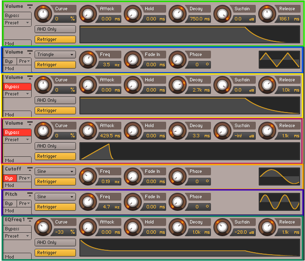
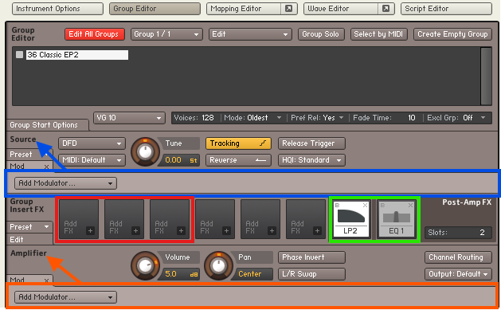

Zerando Samples e outros...
Este procedimento serve para remover moduladores e outros elementos que possam exigir uma configuração específica feita exclusivamente no instrumento Kontakt (biblioteca) de onde importamos o sample. Só vale a pena ser realizado se você estiver enfrentando algum problema que não consegue solucionar.

Clique no  e, em seguida, em "New Instrument", conforme ilustrado na figura acima. Um novo instrumento será carregado, conforme aponta a seta maior. No novo instrumento, clique em
e, em seguida, em "New Instrument", conforme ilustrado na figura acima. Um novo instrumento será carregado, conforme aponta a seta maior. No novo instrumento, clique em  e, em seguida, clique em "Group Editor", que está ao lado direito de "Instrument Options", e em "Mod", à esquerda do volume, abaixo de "Amplifier".
e, em seguida, clique em "Group Editor", que está ao lado direito de "Instrument Options", e em "Mod", à esquerda do volume, abaixo de "Amplifier".
Se tudo correr bem, você verá um instrumento com um "Group1" (vazio). Certifique-se de que está no "Group Editor" (destacado em vermelho), conforme ilustrado na figura abaixo, pois é comum errar o local quando não estamos familiarizados com a tela. Observe que dentro do destaque em retângulo vermelho, temos um modulador Envelope (ADSR) e um Velocity, ambos pré-estabelecidos, pois ainda não temos um sample carregado.
Faça o procedimento de importar o sample descrito no link abaixo. No entanto, ao invés de importar o sample com problema para o "Toca Sample", importe para este instrumento vazio.
Importando SamplesApós importar o sample com problema, você poderá notar semelhanças com o exemplo mostrado na imagem abaixo, que servirá como base para o seu sample.
Certifique-se de estar no "Group Editor", indicado pela seta amarela. Selecione o instrumento importado, indicado pela seta vermelha, com um clique do mouse, pois o outro é um grupo vazio (sem sample), que deve ser excluído. Observe no retângulo azul que antes tínhamos apenas um modulador Envelope (ADSR) e um Velocity. Agora, ao inserir o sample, ele traz consigo alguns moduladores a mais, além de filtros e efeitos provenientes de outros instrumentos Kontakt (bibliotecas) de onde exportamos o sample. Falaremos mais sobre os filtros e efeitos dentro do retângulo vermelho mais adiante. Reiterando para esclarecer: dentro do retângulo azul, temos mais moduladores do que antes de importar o sample, mas estes podem estar endereçados ao instrumento de onde exportamos o sample, e não teremos endereçamento para esses moduladores.
Observe a seta verde na figura acima e a seta vermelha na figura abaixo indicando "Voices" com valor 1. Isso refere-se à polifonia. Quando encontrar esse valor, altere para 128 digitando diretamente sobre ele. No entanto, essa correção deve ser feita no "Toca Sample" e o instrumento salvo.

Após ajustar para 128 e excluir o grupo vazio, clicando nos dois "Mod" indicados pela seta branca da figura acima, a tela abaixo será exibida. Observe que, dentro de "Source" (retângulo azul) e "Amplifier" (retângulo laranja), ainda temos mais do que apenas um modulador Envelope (ADSR) e um Velocity. Dentro do retângulo vermelho, temos filtros FX que pertencem exclusivamente a este sample selecionado (não afetam outros samples). Os que possuem um "B" vermelho, indicando "Bypass", devem ser desativados clicando no "B" (seta azul) para usar o recurso, ou excluídos clicando no "x" onde apontam as setas vermelhas.
Observe as setas brancas acima. Ao clicar no comando para o qual elas apontam, o Kontakt abrirá a tela abaixo, que mostra um bloco de controle referente ao comando escolhido. Cada modulador da figura anterior possui um bloco de controle como este. Quando um modulador é excluído, ele também é automaticamente removido aqui.
Rolando a tela de volta para os moduladores no Kontakt e clicando com o botão direito do mouse no espaço vazio, indicado pelas setas brancas abaixo, aparecerá a opção "Delete". Agora podemos deletar todos os moduladores.

Após deletar os moduladores escolhidos, bem como os filtros e efeitos que restaram, teremos uma tela como a mostrada abaixo. Agora, não há moduladores, conforme destacado em azul e laranja, e os filtros/efeitos remanescentes estão contornados em verde.
Precisamos adicionar um modulador Envelope (ADSR) e um Velocity. Para isso, vá até "Amplifier" (cuidado para não errar o local, indicado em laranja na figura acima), clique em "Add Modulator" > "External Sources" > "Velocity", conforme ilustrado na figura abaixo.

Agora, clique novamente em "Amplifier" (atenção) e selecione "Add Modulator" > "Envelopes" > "AHDSR", conforme ilustrado na figura abaixo.

Se tudo correr bem, você terá o resultado mostrado abaixo, com um modulador Envelope (ADSR) e um Velocity. Agora é só salvar, exportar e importar para o "Toca Sample". No painel dele, ajuste o sample e salve ao final.

Dicas Importantes